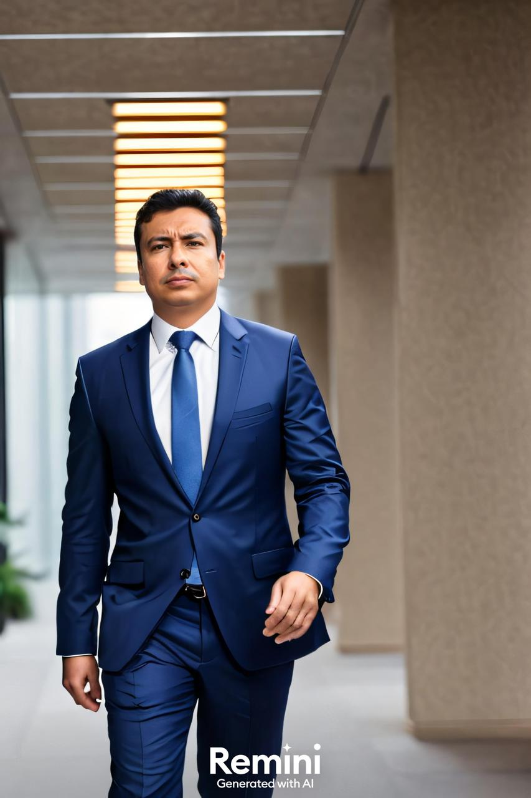

Escritório em Belém do Pará, especialista em Criminal, Tribunal do Júri e instâncias superiores. Atuação também em Previdenciário (benefícios e aposentadorias), Civil, Indenizações, Inventários, Contratos, Empresarial e Trabalhista.

Atendimento presencial em Belém/PA e online.
Advogado atuante no Tribunal do Júri, com condução técnica de defesas, presença em plenário e desenvolvimento de teses estratégicas para casos que exigem preparo, firmeza e comunicação persuasiva.
Pós-graduado em Direito Penal e Processo Penal e em Direito Previdenciário, o Dr. Adriano Gomes de Deus reúne formação especializada para atender demandas criminais e previdenciárias com rigor jurídico, clareza na orientação do cliente e foco em resultado.
Prática jurídica com especialidade em Criminal, Tribunal do Júri e atuação em Tribunais Superiores, além de forte presença no Direito Previdenciário. O escritório também atua nos ramos Civil, Empresarial e Trabalhista.
Defesas criminais técnicas, memoriais, recursos, sustentação oral e estratégia para júri.
Habeas corpus, recursos constitucionais e medidas urgentes perante STJ e STF.
Benefícios, revisões, aposentadorias, BPC/LOAS e ações contra o INSS.
Responsabilidade civil, dano moral e material, contratos e cumprimento.
Inventário judicial e extrajudicial, partilhas, orientações patrimoniais.
Contratos, consultoria preventiva, defesa e reclamações trabalhistas.
Fundado por Adriano Gomes de Deus, o escritório reúne experiência prática e rigor técnico. A atuação é personalizada, com análise minuciosa dos autos, construção de teses consistentes e comunicação clara com o cliente.
Belém do Pará • Consultas on-line para todo o Brasil
WhatsApp: (+55) 91 98112-2227
E-mail: adrianodeusadv@gmail.com
Substitua os dados acima pelos definitivos se necessário.